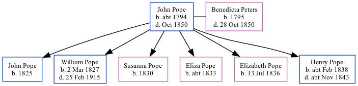

John Isaac Pope c1794 - 1850
[ Home ] | [ Calendar ] | [ Surnames Index ] | [ Family History ], John Pope, the husband of Benedicta Peters (the four times great-aunt of Nigel Horne), was born in Folkestone, Kent, England <i>c.</i> 1794<span class="citation">1,2,3</span> and married Benedicta (with whom he had 6 children: <a href="I3169.html">John</a>, <a href="I3170.html">William</a>, <a href="I3171.html">Susanna</a>, <a href="I3172.html">Eliza</a>, <a href="I3173.html">Elizabeth</a> and <a href="I3174.html">Henry</a>) at Parish Church of St Mary & St Eanswythe, Church Street in Folkestone on Jul 19, 1814<span class="citation">6</span> (St Mary and St Eanswyth Church).</p><p>Throughout his life, he lived at Fancy Street in Folkestone in 1841<span class="citation">1</span> and on Jun 6, 1841<span class="citation">10</span>. <p>He died in Oct 1850 in Folkestone<span class="citation">4,5</span> and was buried there at Ss Mary & Eanswith Church on Oct 12, 1850<span class="citation">7,8,9</span>.
Children
- John was born in 1825
- William was born on Mar 2, 1827
- Susanna was born in 1830
- Eliza was born c. 1833
- Elizabeth was born on Jul 13, 1836
- Henry was born c. Feb 1838
Citations
- 1841 England Census Online publication - Provo, UT, USA: The Generations Network, Inc., 2006.Original data - Census Returns of England and Wales, 1841. Kew, Surrey, England: The National Archives of the UK (TNA): Public Record Office (PRO), 1841. Data imaged from the National
- England Deaths & Burials 1538-1991 - Findmypast
- Kent, Canterbury Archdeaconry burials 1538-1988 - Findmypast
- England & Wales deaths 1837-2007 - Findmypast
- England & Wales, FreeBMD Death Index: 1837-1915 Online publication - Provo, UT, USA: The Generations Network, Inc., 2006.Original data - General Register Office. England and Wales Civil Registration Indexes. London, England: General Register Office. © Crown copyright. Published by permission of the Cont
- England Marriages 1538-1973 - Findmypast
- England, Select Deaths and Burials, 1538-1991 Ancestry.com Operations, Inc.
- Kent, Canterbury Archdeaconry burials 1538-1988 - Findmypast
- England Deaths & Burials 1538-1991 - Findmypast
- 1841 England, Wales & Scotland Census - Findmypast (was age 46 and the head of the household)
Media
Canterbury Burials Image - GBPRS-CANT-005264855-00342
England & Wales deaths 1837-2007 Transcription - BMD-D-1850-4-AZ-000569-155
England Deaths and Burials 1538-1991 Transcription - R_277037959
England Deaths and Burials 1538-1991 Transcription - R_276350383
England Marriages 1538-1973 - R_848367141
Kent, Canterbury Archdeaconry marriages 1538-1928 - GBPRS/CANT/M/97135321/1
England Marriages 1538-1973 - R_848170131
England & Wales deaths 1837-2007 - BMD/D/1850/1/AZ/000598/129
Family Tree
Generated by Ged2Site. Last updated on Jul 20, 2025